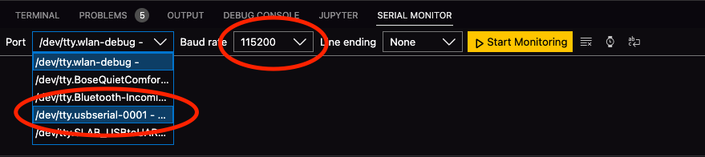

Set up your Pico with TinyGo and VScode
Let the fun begin!
The TinyGo web site has a detailed installation guide for various operating systems. So, the steps below are just for your quick reference. When in doubt, refer to the TinyGo web site.
Prerequisites
- Go version 1.20 or greater.
- Visual Studio Code: I currently run VSCode 1.98.2.
Install TinyGo using Homebrew
Run the following commands:
Verify that the installation was successful by running this command, which should give you the output that is shown below it.
Install the TinyGo VSCode Extension
Inside VSCode, search for the TinyGo VSCode extension and install it.
This extension requires the VSCode Go extension to be installed. If not already installed, the Go extension is installed as a dependency by the TinyGo extension’s installer.
Testing the VSCode Installation
- Put the Pico into Bootsel mode by holding down the
BOOTSELbutton on the Pico while plugging in the USB cable. - Release the
BOOTSELbutton. You should now see a drive namedRPI-RP2on your Desktop. - Go to the VSCode Command Window (
Cmd-Shift-Pon Mac,Ctrl-Shift-Pon Windows) and run theTinyGo targetcommand. Selectpicofor the board. The command will run and create a.vscode/settings.jsonfile in your workspace home directory. This provides the appropriate type hints for Intellisense to work correctly. - Start a new Go program in VSCode. Let’s name it
blinky.go.
// blinky.go
package main
import (
"machine"
"time"
)
func main() {
led := machine.LED
led.Configure(machine.PinConfig{
Mode: machine.PinOutput,
})
for {
led.High()
time.Sleep(500 * time.Millisecond)
led.Low()
time.Sleep(500 * time.Millisecond)
}
}- Flash the program to your Pico using the
tinygo flashcommand:
You should now see the onboard LED blink twice a second, i.e. at 2 Hz.
You have now set up TinyGo on your computer, as well as the TinyGo VSCode extension. The next steps are optional.
(Optional) Enable Serial Debugging
In most microcontroller projects, it is easy (and common) to use the serial port for debugging. If you use MicroPython or CircuitPython, the serial messages are sent via the USB connection to your computer.
Unfortunately, the RP2040 port of TinyGo does not support the printing of serial messages over the USB port. Consequently, you will have to use the UART on the Pico to send debugging messages.
As of TinyGo 0.25.0, USB is supported for debugging. So, this section is moot, but I have left it here in case someone wants to set up a UART connection to their computer.
Install a UART-to-USB Cable
Since the UART cannot talk directly to USB, you will need a USB-to-Serial cable to convert the UART output to USB-compatible signals.
Thankfully, the fine folks at Adafruit have one such cable.
Purchase one of these cables, and follow the instructions to install the drivers required for your OS. Then, plug in the individual leads of the cable into the appropriate UART ports of your Pico, and the USB connector into a USB port on your computer.
If you get the same cable that I did, the connections are as follows:
- Black:
GND - White:
UART0 TX(pin 1 -GP0- on the Pico) - Green:
UART0 RX(pin 2 -GP1- on the Pico)
Install the Serial Monitor VSCode Extension
Search for, and install the Serial Monitor extension for VSCode.
Once the extension is installed, you’ll see a Serial Monitor tab in the terminal pane in VSCode. Click on that tab and configure the settings as shown in the image:

You can use the following program to test that your serial connection is successful.
// serial.go
package main
import "time"
func main() {
print("starting") // the command starts with lowercase "p"
print("program\n") // the command starts with lowercase "p"
for {
println("hello, world") // the command starts with lowercase "p"
time.Sleep(time.Second)
}
}On the Serial Monitor, ensure you have the correct port selected, and press Start Monitoring.
Put your Pico into BOOTSEL mode, and flash your program to the Pico.
% tinygo flash -target=pico serial.go
You should see the text startingprogram printed out to the serial monitor followed by hello, world, every second. Here is a sample.
---- Opened the serial port /dev/tty.usbserial-0001 ----
startingprogram
hello, world
hello, world
hello, world
hello, world
---- Closed the serial port /dev/tty.usbserial-0001 ----
Press Stop Monitoring on the Serial Monitor to stop monitoring the serial input.
You have now successfully set up serial debugging between your computer and the Pico for TinyGo.
While the extension is great since it’s well integrated with VSCode, the font choice - which is as yet unchangeable - is terrible. Apparently, this issue has been fixed and will release with the next release of this extension, whenever that is.
Grab a coffee or your drink of choice! You have earned it!